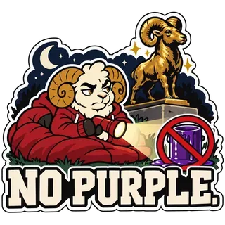
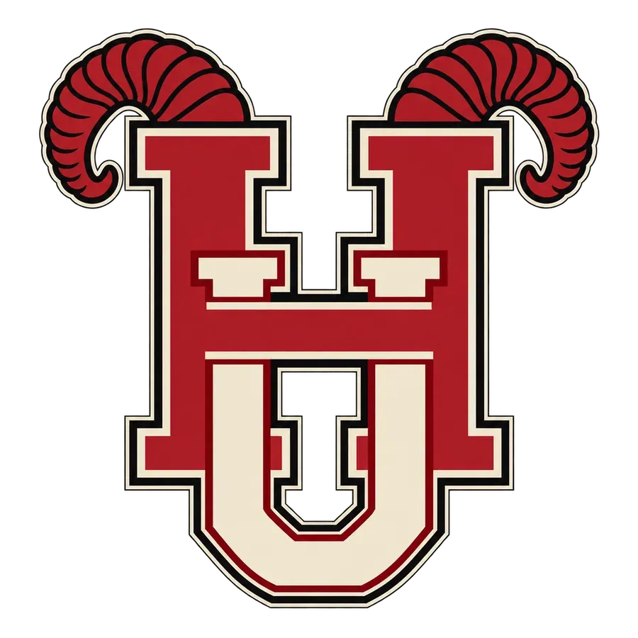
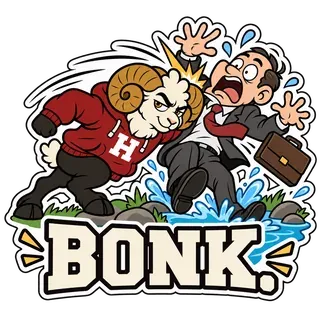
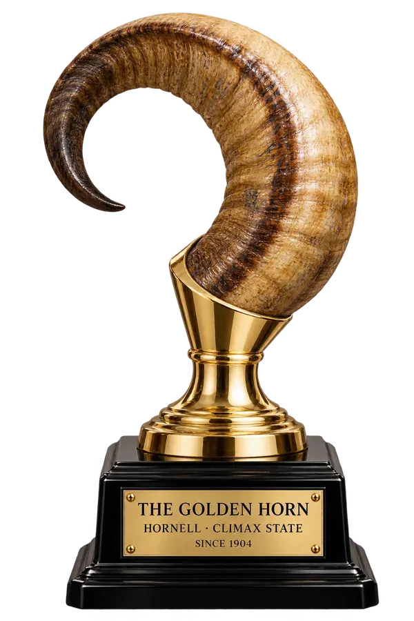
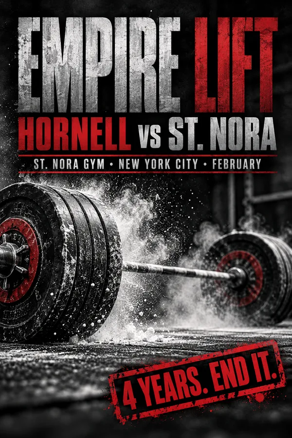

Athletics
Hornell Rams
NCAA Division I athletics in Hornell red and white: football and hockey in front of the whole region, and a volleyball program with three national titles.
Horns up. Index and pinky. Scream RAM IT! on every third down. If we beat Climax, the chimes play all night and KEG burns a couch.

Teams
Programs
Who's worth watching

Schuyler Field · 48,000
Football
Head coach Sal Bruno, fourteen seasons, two conference titles.
Brody Haskins at quarterback, free wings on game nights, and a coach who has never worn a coat on the sideline.

The Ram Pen · 10,000
Women's volleyball
Three national titles under former Brazilian Olympian Ana Ferreira.
The program that actually wins. Late twice and you're cut. The team has the fifth floor of the Ridge.
Kowalski Rink · 4,300
Hockey
A 1957 barn of a rink where Friday-night games sell out by Tuesday.
A religion. Canadians missing teeth, a chant for every goalie built from his Instagram, and rubber fish when Climax visits.

Keuka Lake
Rowing
Sunrise practice on Keuka Lake, forty minutes from campus.
Up at 4:30, eat constantly, talk only about rowing.

The Varsity Complex
Wrestling
A Division I program with a growing regional reputation.
Yes, that's the official logo. On off days they train at Zeno's Temple.


The Lynx Den · Union basement
Battering Rams esports
League, Valorant and Smash, ranked top 15 nationally.
Started in 2016 as the Quantum Lynx. Athletics made them take a ram name. Nobody calls them the Rams. Forty fans still chant LYNX.

The Rec
Barbell Club
Powerlifting and weightlifting, building toward the Empire Lift each February.
Chalk on everything. Lost to St. Nora four years running, mostly to Daria Sokolova.

Heated pen behind the Varsity Complex
Shika, live mascot
A white Nubian goat cared for by vet-school students. Attends every home game in a red blanket.
Replaced Ramsey VII after he headbutted a trustee into the gorge. Has bitten two trustees and eaten a program on ESPN.

Football · 2026
Schedule and results
Record 6–1 · Home games at Schuyler Field
| Date | Opponent | Result / kickoff | |
|---|---|---|---|
| Sep 5 | vs | Erie Polytechnic | W 38–10 |
| Sep 12 | at | Allegheny Tech | W 24–21 |
| Sep 19 | vs | Dominion University (Ohio) | W 31–17 |
| Sep 26 | at | Genesee State | L 20–27 |
| Oct 3 | vs | Mohawk Valley | W 42–14 |
| Oct 10 | at | Lackawanna | W 17–13 |
| Oct 17 | vs | Seneca A&M · Homecoming | W 35–28 |
| Oct 24 | vs | Chautauqua State · Red Out | 12:00 p.m. |
| Oct 31 | at | Susquehanna Tech · night game | 7:00 p.m. |
| Nov 7 | vs | Adirondack University | 3:30 p.m. |
| Nov 14 | at | Dominion (Bellton, Fla.) | 7:30 p.m. |
| Nov 21 | vs | Climax State · The Golden Horn | 12:00 p.m. |
This season's Dominions
Recurring opponents
Every schedule has a Dominion on it
Hornell competes against several institutions named Dominion across conferences.
None of them claim to be related. Bleat is sure it's one school.
| Sport | Opponent | When |
|---|---|---|
| Football | Dominion University (Ohio) | Sep 19 · won 31–17 |
| Volleyball | Dominion University (Ohio) | Oct 23 · the Ram Pen |
| Hockey | Dominion College of Toronto | Nov 13 · Kowalski Rink |
| Football | Dominion (Bellton, Fla.) | Nov 14 · away. The mayor will shake your hand. |
| Baseball | Dominion (Indiana) | March · away. The dugout is scared of their coach. |
The rivalry · since 1904
The Golden Horn
Nobody finishes at Climax
Every Saturday before Thanksgiving, Hornell and Climax State University meet for the Golden Horn, a ram's horn mounted on a gold-plated base. Horn Week brings a pep rally, a bonfire on the Quad and an overnight watch over Ramsey, our bronze ram.
Climax State, two hours south in Pennsylvania: 48,000 students, purple and gold, the Mattress Factory. They call us Horny U and mean it as an insult. During Ramsey Watch students guard the statue overnight in tents against raiders with purple paint: hot chocolate, flasks and a lot of hooking up in sleeping bags. Climax got him in 2019 and 2023.



Rival · Climax, Pa.
Climax State Cougars
Purple and gold. 48,000 students.
They try to paint Ramsey purple every November.

Horn Week · November
Ramsey Watch
Students keep watch over the Ramsey statue the week of the game.
No purple on our ram. Bring two sleeping bags.

City rival · February
The Empire Lift vs St. Nora
An annual powerlifting meet at St. Nora Academy in Manhattan.
Four years, four losses. They call us Cow Tech. We call them St. Snora.